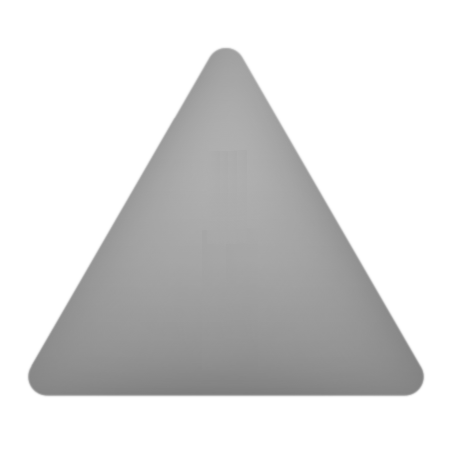
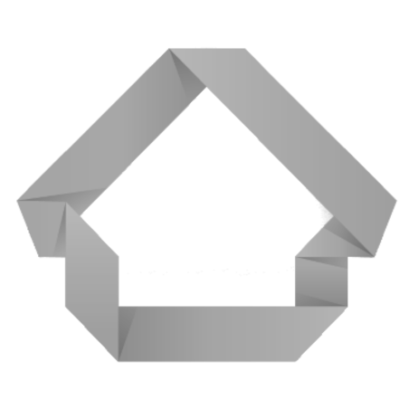
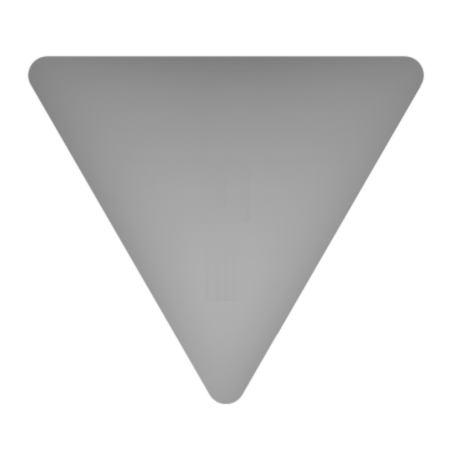

Home
(current)
Robots
Turtlebot3
Niryo One
meuble
Connections
Turtlebot3
Not connected
Niryo One
Not connected
Meuble
Not connected
Niryo One :
Allumage de la caméra
"
Controle du Niryo
Observation avec le Niryo
Servir
Pause
Ranger
Arrêt de l'action



Informations :
Méthode de controle du turtlebot
Commande en utilisant les boutonts sur la page web
En utilisant les touches du clavier
touche
z
pour aller devant
touche
q
pour aller à gaucher
touche
d
pour aller à droite
touche
x
pour aller en arrière
touche
s
pour se stopper